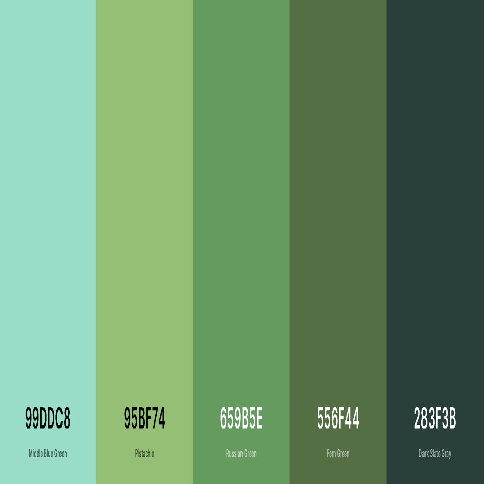
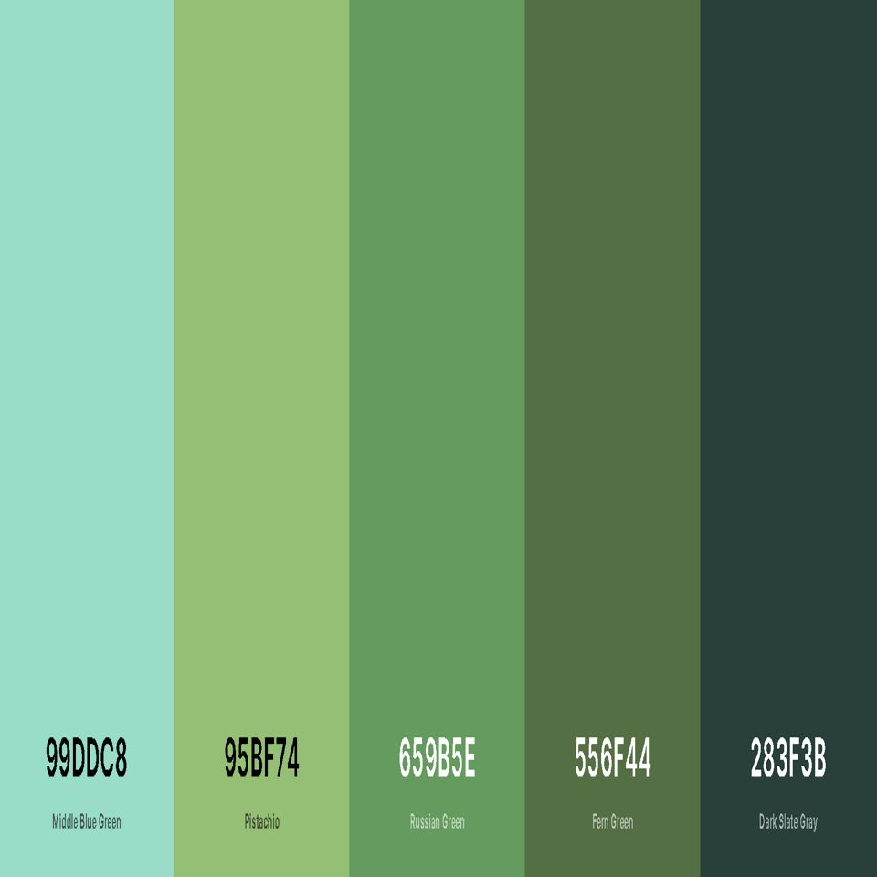

Website styleguide
My experimentation with dark fonts revealed that textual elements become less readable. They also sometimes struggle to emphasize certain elements of the website. I have decided to use this range of blue colour palettes because it felt in line with my characters passion for fishing. The different shades of blue are intended to be softer on the readers eyes and will cause less strain over the period that the website is viewed. I also believe that faint colour palettes offer a sense of relaxation and comfort. Therefore, darker fonts will be used in headers or when the user moves their cursor over a hyperlink section.


 

Web Design Rationale and Reflection
The site resonates with the goals that was initially set. From a technical standpoint, the website falls short from what was planned. I would have liked to create more interaction through the website but due to my lack of knowledge in the field of software development I could not fully achieve this goal. However, the development process has given me a better understand of the mechanics and dynamics in web design. I feel satisfied with the knowledge that was gained from working on this project and in the future I hope to further develop my skills and experience with web creation.